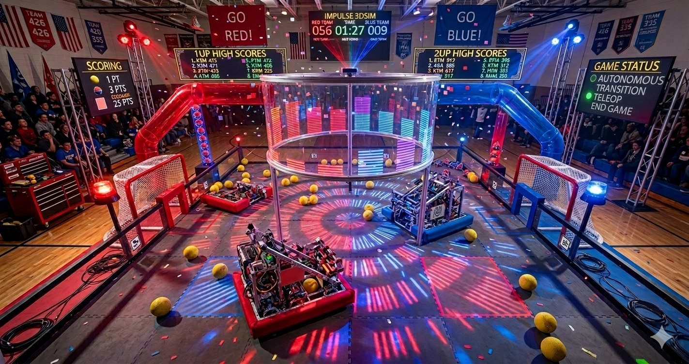
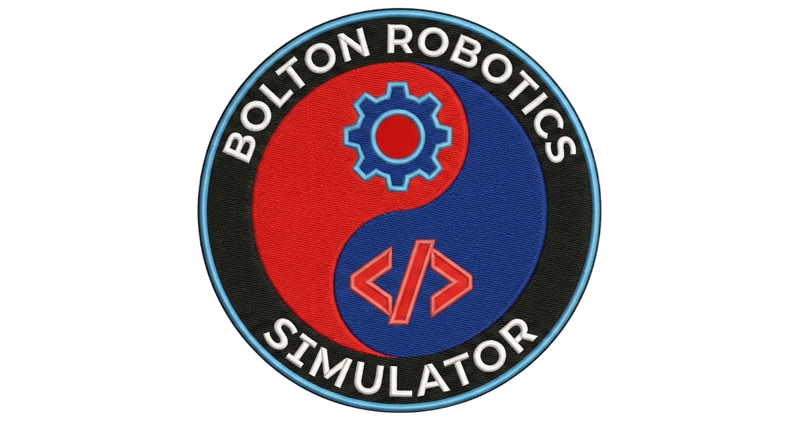

Impulse 3D Robot Simulator
v2 — browser edition
Special Thanks To…
three.js—mrdoob/three.js — WebGL 3D rendering
Rapier3D—dimforge/rapier — Rust physics engine (WASM)
CheerpJ—Leaning Technologies — in-browser Java compiler & JVM
Eclipse ECJ—Eclipse JDT — Java compiler
CodeMirror—codemirror.net — in-browser code editor
FIRST Tech Challenge—FTC SDK — hardware interfaces & OpMode framework